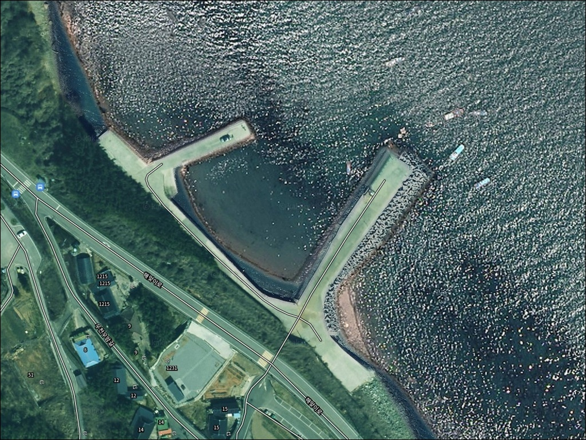
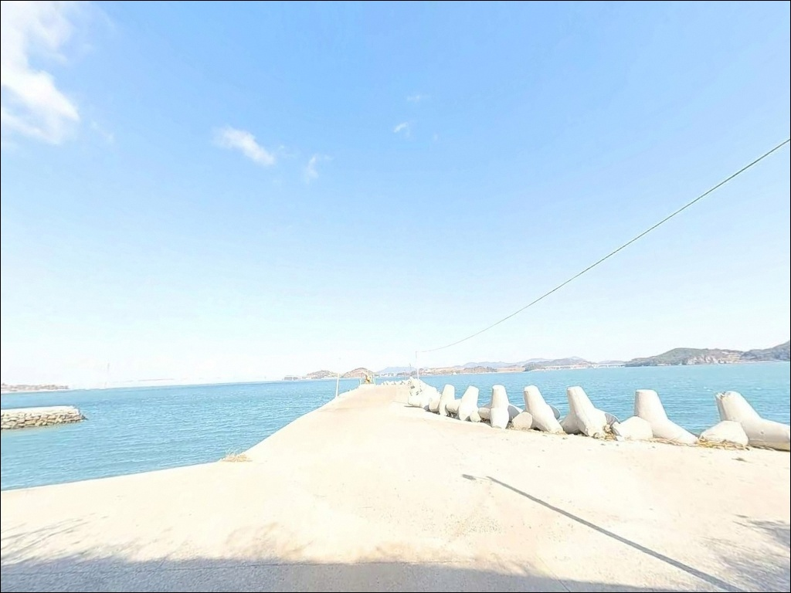
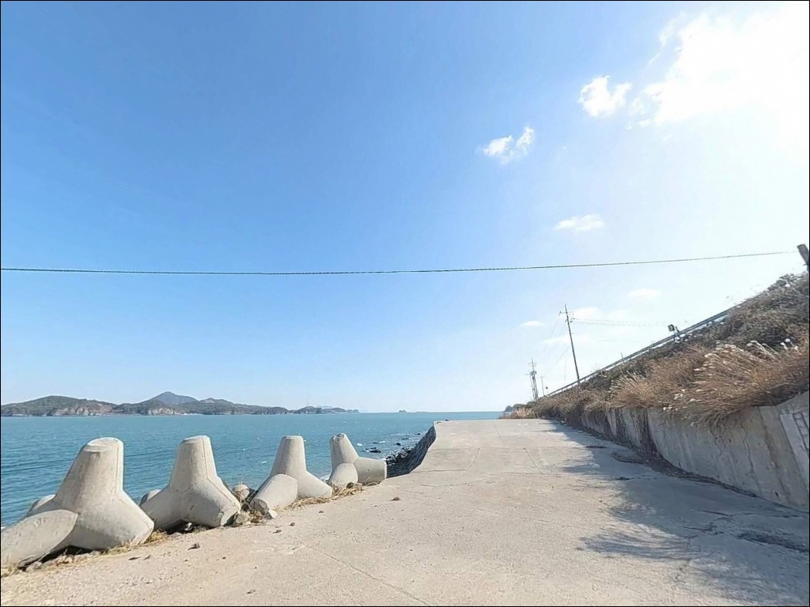
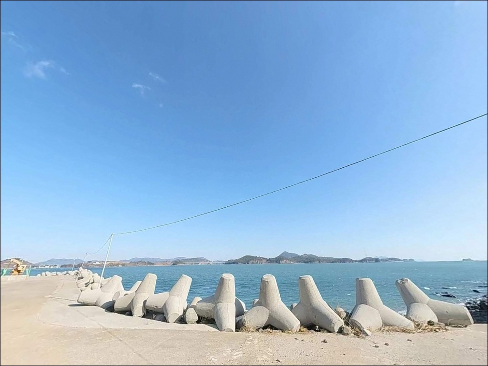
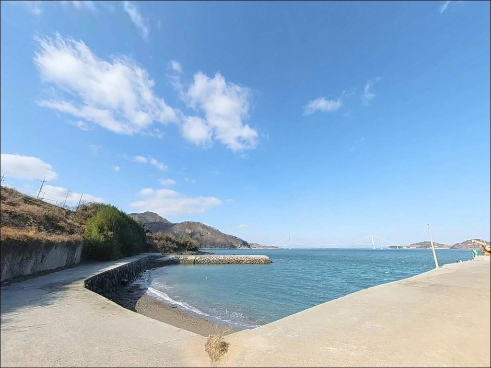
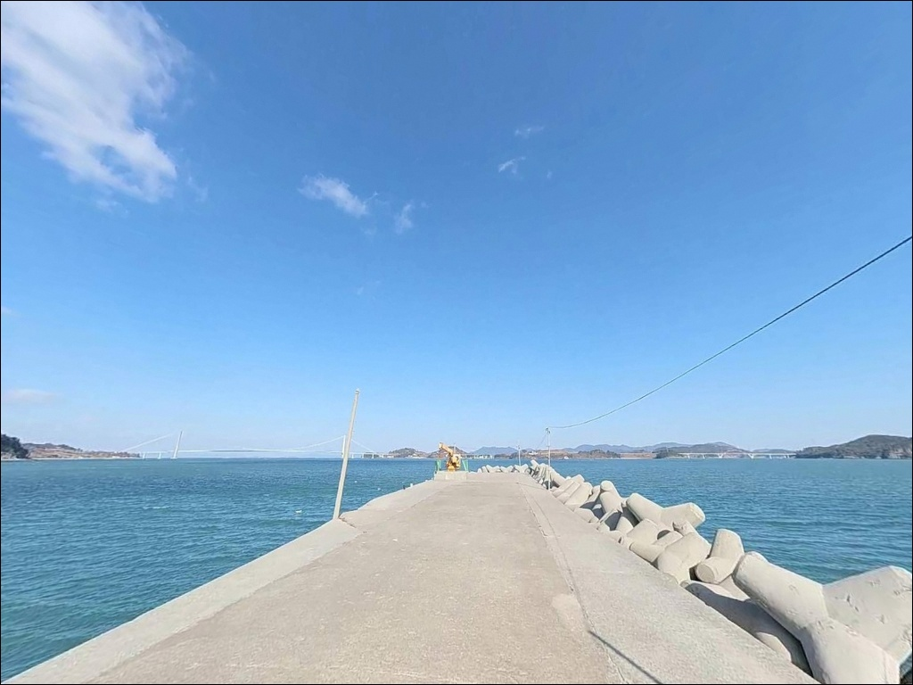
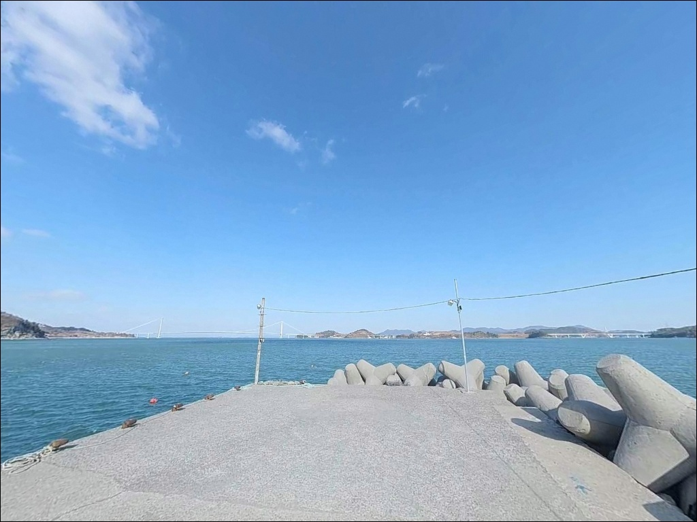
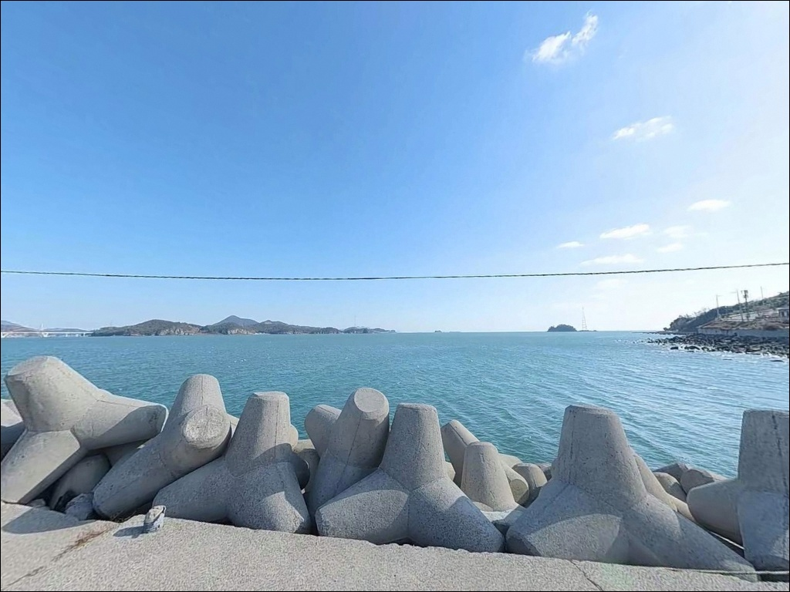
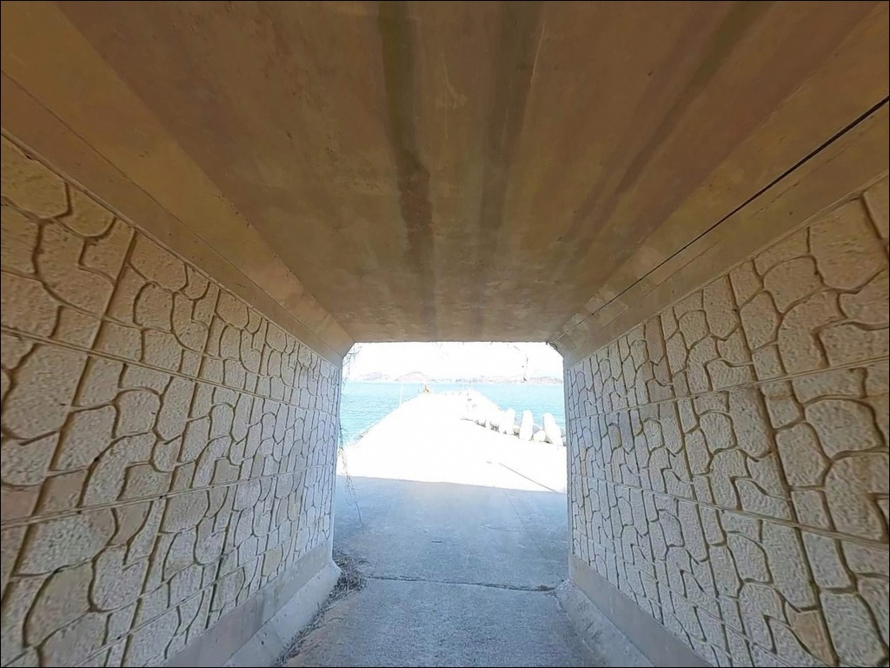

이 페이지에는 광고(제휴 링크 포함)가 있으며, 광고 링크를 통해 구매하면 운영자가 판매 수익 또는 수수료를 받을 수 있습니다. 포인트 사진: 카카오맵 스카이뷰·로드뷰. 이 페이지의 지도·사진 이미지는 카카오맵의 실제 서비스 이미지와 다를 수 있습니다.

우암방파제
전남 고흥군 영남면 우천리 1-30
물때 확인 없이 우암방파제에 도착하면
간조 타이밍과 맞물려
방파제 주변 낚시 가능 구간이
크게 줄어드는 상황을 마주하게 됩니다.
고흥 영남면 연안은 간조 시
낚시 불가 구간이 발생하는 해역이라,
물때를 먼저 계산하고 출발 시각을 잡는 것이
이 포인트의 기본 준비 순서입니다.
이 글은 우암방파제의
진입 동선, 차박 여건, 물때 판단 기준,
낚시 스타일별 공략 조건에 집중합니다.
조황 단정이나 특정 어종 보장은
이 글의 범위에 포함되지 않습니다.

우암방파제는 팔영대교에서
남열우주전망대·남열해수욕장 방향으로 이어지는
2차선 해안도로 축선 상에 위치합니다.
해안도로에서 우암마을 안쪽으로 진입해
방파제까지 닿는 구조로,
포장도로가 방파제 입구까지 연결되어 있어
승용차와 소형 SUV는 별다른 어려움 없이
진입할 수 있습니다.
방파제 인근 주차 후보는
입구 도로변 넓어지는 구간과
선착장 옆 공터 두 곳입니다.
소형 차량 기준 1~2대가 세울 수 있는 수준이며,
어선 정박 동선과 겹치지 않는 자리가
우선입니다.
대형 캠핑카나 카라반은
마을 안길 폭과 회차 공간을 고려하면
진입 전 위성지도로 동선을 미리 확인하는 편이
안전합니다.
방파제 앞 해안도로와
팔영대교를 잇는 도로는 차량 통행이 있는 편이라,
우암마을 진입 후에는 주민 차량 동선에
방해가 되지 않는 자리 선정이 기본 매너입니다.

우암방파제 일대는 팔영대교 관광 축선과
연결되는 해안도로 상에 위치해,
주말과 관광 성수기에는 통행 차량이 있는 편입니다.
반면 평일 야간에는 차량 유입이 거의 없어
조용한 차박 환경이 형성되는 편입니다.
팔영대교와 연도교 쪽 경관조명이
야간에도 해상 시야를 밝혀 주는 구간이라,
완전 암흑 환경보다 시인성은 나은 편입니다.
우암마을 전면 해역은
내매물도·외매물도가 바깥쪽에서 파도를 가려주는 구조라
기본적으로 잔잔한 내만 성격의 해역입니다.
다만 서쪽·북서쪽 방향으로 개방된 구간이 있어
기상에 따라 바람 영향을 받는 날이 있습니다.
출박 전날 기상 예보와 풍향 확인은
차박 여건 판단의 기본입니다.

우암방파제 반경 1km 이내에는
편의점이나 식당을 기대하기 어렵습니다.
소규모 어촌 마을 특성상
식수·간식·낚시 소품은 출발 전에
모두 갖춰야 합니다.
연료도 미리 채우고 가는 편이 좋습니다.
반경 3km 범위, 팔영대교 초입 일대에는
카페와 편의점, 영남면 소재지 방면 작은 슈퍼가
이용 가능한 편입니다.
부족한 소품이나 간식이 있다면
이 동선을 활용하는 편이 효율적입니다.
응급 상황 발생 시에는
점암면 또는 여수 화양면 방면으로
이동해야 하므로,
비상약품과 응급 연락처는
사전에 챙기는 것이 기본입니다.

우암방파제 방문 전에
가장 먼저 확인할 것은 물때입니다.
고흥 영남면 연안은 간조 시
낚시 불가 구간이 발생하는 해역이라,
중들물 이후 타이밍을 기본 입장 기준으로
삼는 편이 안전합니다.
바다타임에서 영남면 기준 물때를 미리 확인하고
출발 시각을 역산하는 것이 기본 절차입니다.
기상은 당일 아침 재확인이 필수입니다.
섬과 방파제 사이 해역 특성상
예보와 현장 풍속 차이가 날 수 있어,
기상청 예보 외에
국가해양예보포털이나 바다타임의
파고 정보를 함께 살피는 편이 좋습니다.
암초와 테트라포드 구간에서는
채비 손실이 잦은 편입니다.
여분 채비를 넉넉하게 준비하고,
야간 낚시라면 헤드랜턴과 구명조끼는
반드시 착용해야 합니다.
마을 어선이 오가는 선착장 구조이므로
어구와 어선 정박 동선에
접촉하지 않는 자리 선정이
기본 매너입니다.

우암방파제가 자리한 우천리 해안은
내매물도·외매물도가 외측에서
파도와 너울을 차단해 주는 구조입니다.
덕분에 방파제 전면은
만(灣) 안쪽 성격의 잔잔한 해역이 기본으로 형성되며,
외부 파도 영향이 상대적으로 적은
내만형 소형 방파제라는 점이
이 포인트의 지형적 특성입니다.
방파제 끝단과 외항 측면은
만 입구 방향으로 열려 있어
조류 흐름이 집중되는 구간입니다.
원투 채비가 조류를 따라 흘러가며
바닥층을 탐색하는 패턴이 자연스럽게 형성되고,
내항 방향은 완만한 경사의
사질·자갈 혼합 지형으로
찌낚시 운용에 어울리는 조건입니다.
방파제 외항 쪽 만조 시 수심은
3~5m 수준으로, 간조 시에는
낚시 가능 구간이 줄어드는 해역입니다.
출조 전에 고흥 영남면 우천리 일대 조황은
반드시 직접 검색해 보시기 바랍니다.

원투낚시는 우암방파제 구조에
가장 잘 맞는 방식입니다.
외항 방향 끝단에서 조류를 타고
채비를 멀리 보내 바닥층을 탐색하는 방식으로,
붕장어·도다리·보구치를
기대해 볼 수 있는 사질·혼합 바닥 구조입니다.
중들물 이후 조류가 살아나는 타이밍이
원투 입장 기준으로 유효합니다.
찌낚시는 내항 코너 구간과
방파제 안쪽의 완만한 수심대를
흘려 탐색하는 방식으로 잘 맞는 스타일입니다.
감성돔과 볼락을 기대할 수 있으며,
야간 방파제 벽면과 테트라포드 주변에서
초썰물 구간까지 집중하는 패턴이
이 지형에 어울립니다.
루어낚시와 에깅은
방파제 끝단과 테트라포드 라인을 따라
탐색 효율이 좋은 스타일입니다.
고흥 영남면 전역이 문어·갑오징어
루어낚시 영향권에 속하며,
방파제 외항 쪽 바닥을
느리게 더듬는 운용 방식이
기본 전략입니다.
봄 갑오징어 산란 시즌과
여름 이후 문어 활성기에
집중하는 편이 좋습니다.

우암방파제 주차가 여의치 않거나
조류 조건이 기대에 못 미칠 때
첫 번째 대안은
같은 우천리 해안선 인근의 용암선착장 방파제입니다.
해역 조건이 비슷하고 구조도 유사한 편으로,
같은 물때 기준으로 운용이 가능합니다.
남열 곤내재 해안은
남열해수욕장 방향 해안도로를 따라
이동하면 닿을 수 있는
개방형 해안 포인트입니다.
원투낚시와 루어낚시가 가능한 구조로,
우암방파제의 내만 성격과 달리
개활 해역 조건을 원한다면
비교해 볼 만한 대안입니다.
거리를 넓혀 고흥 동부 연안 대표 방파제인
여호항 방파제를 플랜B로 두면
다양한 낚시 방식을 운용할 수 있는
규모 있는 포인트로 이동이 가능합니다.
차박 플랜B로는
차량 7km 거리의
해창만 오토캠핑장이
전기·편의시설을 갖춘
안정적인 대안입니다.

원투낚시와 루어·에깅을 두루 운용하고 싶은
낚시인이라면 우암방파제의 지형 조건은
복수 방식 공략이 가능한 구조입니다.
내매물도·외매물도가 파도를 차단해주는
잔잔한 내만 해역에서
물때에 맞춰 채비를 운용하는
생활형 낚시 포인트로 적합합니다.
아직 온라인 기록이 많지 않은
소형 마을 방파제이므로,
출조 전 영남면 우천리 일대 조황을
직접 검색하고 가시는 편이 좋습니다.
반면 물때 계산 없이 간조 타이밍에
도착하거나, 편의시설 없는
노지형 환경에 대한 준비 없이 찾는다면
불편한 방문이 될 수 있습니다.
물때 확인, 자급 준비, 차량 동선 점검,
이 세 가지를 갖추고 간다면
조용한 고흥 영남면 해안을
온전히 즐길 수 있는 포인트입니다.
팔영대교 조망이 가능한 해안에
차를 세우고 하룻밤 머무는 차박 여행자라면,
주말보다 평일 야간을 택하는 편이
더 조용한 환경을 확보하는 방법이며,
낚시와 차박을 함께 계획한다면
물때와 기상 확인부터 시작하는 것이
이 포인트를 제대로 즐기는 방법입니다.